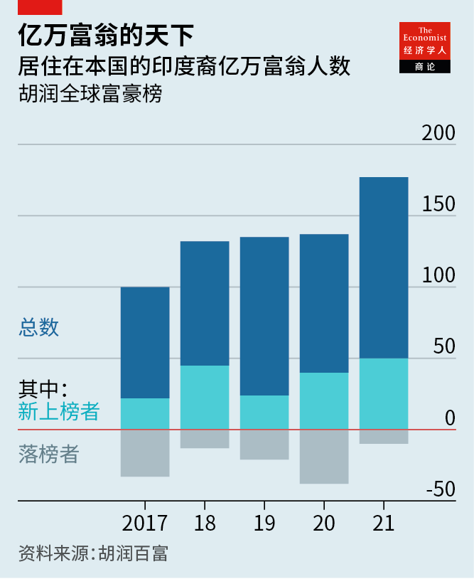
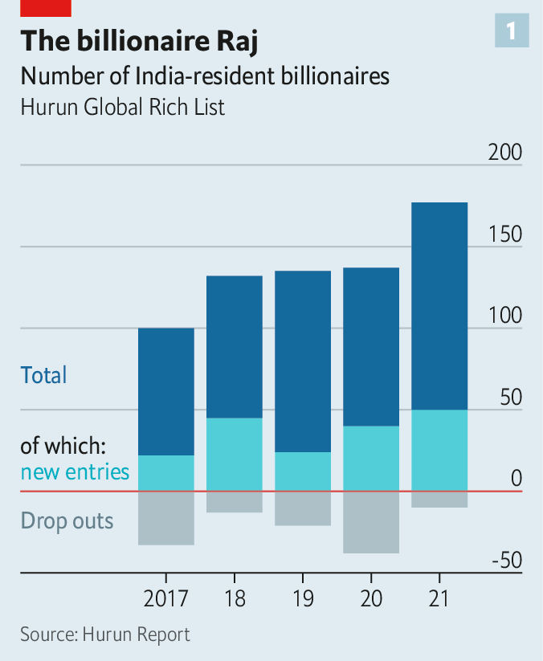
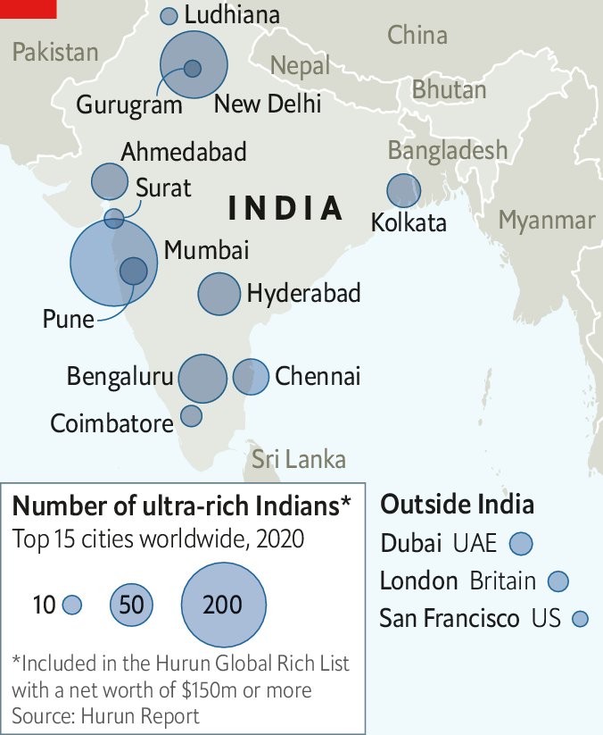

2021-04-12T15:03:14+00:00
超级富豪
富豪大变身
透过印度亿万富翁阵容的变化看该国商界的变化
追踪富豪的胡润百富编制出了新的亿万富翁全球榜。瞥一眼上面的印度人名，果然还是强者愈强。穆克什·安巴尼（Mukesh Ambani）毫无悬念地坐稳首富之位，身家830亿美元；第二名是高塔姆·阿达尼（Gautam Adani），身家320亿美元。这二人的财富都来自各自的工业企业集团，安巴尼的集团以石化产品为核心，阿达尼的以港口和发电厂为核心。二人都有本事在印度喧嚣混乱的法庭和官僚机构间穿梭自如。二人也都主要在南亚次大陆西部的工业中心马哈拉施特拉邦（Maharashtra）和古吉拉特邦（Gujarat）运营业务。
然而仔细观察一番，就会发现这份榜单揭示出印度经济正在发生变化。安巴尼因旗下数字子公司Jio而身家大涨。Jio经营着一个巨大的电信网络，还有望在电子商务方面一展宏图。上榜的其他人越来越多地出自制药和科技等代表印度未来的行业，而不是重工业。他们来自全国各地，队伍也在迅速壮大。
去年有创纪录的50人新加入胡润榜单，只有10人掉出榜单（见图表）。印度在2017年有100名亿万富翁，现在有177名，数量仅次于中国（约1000名）和美国（约700名）。再加上印度侨民中的30人，印度亿万富翁的财富总量在此期间几乎翻了一番，达到7400亿美元。新面孔和落榜者都勾画出了一个转型的故事。
先来看那些掉出榜单的。因欺诈指控而垮台的大亨人数如此之多，奈飞（Netflix）专门拍过一部纪录片《印度亿万富豪陨落记》（Bad Boy Billionaires: India）。其他许多人失势是因为过度借贷令他们不堪重负。米商出身的媒体大亨苏巴什·钱德拉（Subhash Chandra）已经辞去了一些职务。基肖尔·比亚尼（Kishore Biyani）的零售帝国未来集团（Future Group）负债累累，价值逐渐缩水。穆克什的弟弟阿尼尔·安巴尼（Anil Ambani）也一样，过去12年他420亿美元的财富已缩水至原来的一小部分。
靠实体资产积累起的财富正在被智力资本和消费者支出驱动的财富赶超。建筑业等曾经盛产大亨的行业进入了相对衰落阶段。今年印度的新晋亿万富翁中有12人是做制药生意致富的，这使得上榜的印度药厂富翁达到39人。有九人是消费品卖家。
全球科技股飙升让一些人大发软件财。现在，印度亿万富翁（包括海外侨民富豪）的总财富中有950亿美元来自信息技术领域，而2016年时为300亿美元。新晋软件巨头包括杰伊·乔德里（Jay Chaudhry），他控制的网络安全公司Zscaler总部位于加州，市值250亿美元；此外还有HCL Technologies的创始人希夫·纳达尔（Shiv Nadar）的家族，这家信息技术咨询公司的市值在过去一年翻了一番，逼近400亿美元。胡润百富的阿纳斯·拉赫曼·朱奈德（Anas Rahman Junaid）追踪近100家“独角兽”，他认为，随着这些估值10亿美元或以上的私人控股公司越来越多地上市，信息技术出身的亿万富豪阵容应该还会壮大。这些创业公司中有三分之二总部设在国外，大多是在美国。
并非所有印度亿万富翁都是创建了成功公司的企业家。特别是在侨民中，有些是成功运营了他人创立的公司的职业经理人。他们包括：托马斯·库里安（Thomas Kurian），前甲骨文高管，如今负责谷歌的云计算部门；贾什里·乌拉尔（Jayshree Ullal），云网络公司Arista网络（Arista Networks）的老板；以及彭安杰（Ajaypal Banga），万事达卡的前首席执行官。这支队伍可能很快又会有新人加入：库里安在谷歌母公司Alphabet的老板桑达尔·皮查伊（Sundar Pichai），以及微软的萨蒂亚·纳德拉（Satya Nadella），两人估计各有八亿美元的净资产；尼科什·阿罗拉（Nikesh Arora），另一家大型网络安全公司派拓网络（Palo Alto Networks）的首席执行官。
印度裔高管如此成就斐然，或许有助于解释为什么到2020年能在41个外国城市中找到资产不少于1.5亿美元的印度人，而五年前这样的城市还是14个。在印度国内，这些巨富仍然聚集在商业之都孟买（见地图）。但在钦奈或海得拉巴等地，这个群体扩张得更快。在2016年，他们分布在整个南亚次大陆的28个城市，现在已增加到70个。
与美国、欧洲甚至中国的富豪相比，印度亿万富翁在其14亿人口中所占的比例仍然小得多。中国的人口与印度大致相当，但要富裕得多。但是，如果印度上演的富豪阵容洗牌可作为一种参考的话，至少可看出赚取巨额财富的机遇正在扩散。
2021-04-12T15:03:14+00:00
The ultra-rich
A plutocratic makeover
The changing profile of billionaires illustrates how India Inc is changing
AT FIRST GLANCE the Indian names on the billionaires list compiled by Hurun Report, which tracks such things, reinforce the image of the powerful growing more so. At the top, to no one’s surprise, was Mukesh Ambani (worth $83bn), followed by Gautam Adani ($32bn). Both owe their riches to industrial conglomerates (centred, respectively, on petrochemicals, and ports and power plants). Both have a knack for navigating India’s obstreperous courts and bureaucracy. Both operate mainly in Maharashtra and Gujarat, the industrial heartlands in the west of the subcontinent.
Yet look more closely and the rich list reveals India’s changing economy. Mr Ambani’s wealth has soared because of Jio, his firm’s digital subsidiary which runs a huge telecoms network and has become an e-commerce prospect. Other members of the billionaire list increasingly represent the businesses of India’s future, including drugmaking and technology, rather than heavy industry. They come from across the country. And their ranks are swelling fast.
A record 50 joined Hurun’s list last year; only ten dropped out (see chart). India now has 177 billionaires, up from 100 in 2017 and behind only China (with around 1,000) and America (700 or so). Add the Indian diaspora’s 30 billionaires, and their combined wealth has nearly doubled over the period, to $740bn. Both the newcomers and the drop-outs tell a story of transformation.
Start with the deposed tycoons. Enough have been felled by charges of fraud to inspire Netflix to produce a documentary, “Bad Boy Billionaires: India”. Many others owe their relegation to struggles with excessive borrowing. Subhash Chandra, a rice trader turned media mogul, has stepped down from some of his posts. Kishore Biyani has seen the value of his indebted business, a retail empire called Future Group, dwindle. So has Anil Ambani, Mukesh’s younger brother, who has seen his $42bn fortune dwindle to a fraction of that over the past 12 years.
Fortunes built on physical assets are being overtaken by those fuelled by intellectual capital and consumer spending. Industries that used to mint tycoons, such as construction, are in relative decline. Twelve of this year’s new billionaires in India owe their status to drugmaking, bringing their number on Hurun’s list to 39. Nine peddle consumer goods.
The global surge in technology stocks has boosted software fortunes. Including the diaspora, IT now accounts for $95bn of Indian billionaires’ wealth, up from $30bn in 2016. The latest software moguls include Jay Chaudhry, who controls Zscaler, a cyber-security firm based in California with a market capitalisation of $25bn, and the family of Shiv Nadar, founder of HCL Technologies, an IT consultancy whose stockmarket value has doubled in the past year to nearly $40bn. Their ranks are likely to swell as more privately held companies valued at $1bn or more go public, observes Anas Rahman Junaid of Hurun, who tracks nearly 100 such “unicorns”. Two-thirds of these startups are based abroad, most of them in America.
Not all Indian moguls are entrepreneurs who founded successful firms. Especially in the diaspora, some are professional managers who have successfully run companies created by others. They include Thomas Kurian (a former Oracle executive who heads Google’s cloud-computing division), Jayshree Ullal (boss of Arista Networks, a cloud-networking firm) and Ajaypal Banga (former chief executive of Mastercard). They may soon be joined by Sundar Pichai, Mr Kurian’s boss at Google’s parent company, Alphabet, and Satya Nadella of Microsoft (with an estimated net-worth of $800m apiece), as well as Nikesh Arora, CEO of Palo Alto Networks, another big cyber-security firm.
Accomplished Indian executives may help explain why 41 foreign cities were home to Indians with assets of $150m or more in 2020, up from 14 five years ago. At home these ultra-rich still cluster in Mumbai, the commercial capital (see map). But their ranks are swelling faster in places like Chennai or Hyderabad. They can now be found in 70 cities across the subcontinent, compared with 28 in 2016.
Indian billionaires still make up a much smaller fraction of its 1.4bn people than fellow plutocrats in America, Europe and even China, which is roughly as populous as India but considerably richer. But if the country’s plutocratic makeover is a guide, at least the opportunities for great wealth appear to be spreading. ■
2021-04-12T15:03:14+00:00
超級富豪
富豪大變身
透過印度億萬富翁陣容的變化看該國商界的變化
追蹤富豪的胡潤百富編製出了新的億萬富翁全球榜。瞥一眼上面的印度人名，果然還是強者愈強。穆克什·安巴尼（Mukesh Ambani）毫無懸念地坐穩首富之位，身家830億美元；第二名是高塔姆·阿達尼（Gautam Adani），身家320億美元。這二人的財富都來自各自的工業企業集團，安巴尼的集團以石化產品為核心，阿達尼的以港口和發電廠為核心。二人都有本事在印度喧囂混亂的法庭和官僚機構間穿梭自如。二人也都主要在南亞次大陸西部的工業中心馬哈拉施特拉邦（Maharashtra）和古吉拉特邦（Gujarat）運營業務。
然而仔細觀察一番，就會發現這份榜單揭示出印度經濟正在發生變化。安巴尼因旗下數字子公司Jio而身家大漲。Jio經營着一個巨大的電信網絡，還有望在電子商務方面一展宏圖。上榜的其他人越來越多地出自製葯和科技等代表印度未來的行業，而不是重工業。他們來自全國各地，隊伍也在迅速壯大。
去年有創紀錄的50人新加入胡潤榜單，只有10人掉出榜單（見圖表）。印度在2017年有100名億萬富翁，現在有177名，數量僅次於中國（約1000名）和美國（約700名）。再加上印度僑民中的30人，印度億萬富翁的財富總量在此期間幾乎翻了一番，達到7400億美元。新面孔和落榜者都勾畫出了一個轉型的故事。
先來看那些掉出榜單的。因欺詐指控而垮台的大亨人數如此之多，奈飛（Netflix）專門拍過一部紀錄片《印度億萬富豪隕落記》（Bad Boy Billionaires: India）。其他許多人失勢是因為過度借貸令他們不堪重負。米商出身的媒體大亨蘇巴什·錢德拉（Subhash Chandra）已經辭去了一些職務。基肖爾·比亞尼（Kishore Biyani）的零售帝國未來集團（Future Group）負債纍纍，價值逐漸縮水。穆克什的弟弟阿尼爾·安巴尼（Anil Ambani）也一樣，過去12年他420億美元的財富已縮水至原來的一小部分。
靠實體資產積累起的財富正在被智力資本和消費者支出驅動的財富趕超。建築業等曾經盛產大亨的行業進入了相對衰落階段。今年印度的新晉億萬富翁中有12人是做製藥生意致富的，這使得上榜的印度藥廠富翁達到39人。有九人是消費品賣家。
全球科技股飆升讓一些人大發軟件財。現在，印度億萬富翁（包括海外僑民富豪）的總財富中有950億美元來自信息技術領域，而2016年時為300億美元。新晉軟件巨頭包括傑伊·喬德里（Jay Chaudhry），他控制的網絡安全公司Zscaler總部位於加州，市值250億美元；此外還有HCL Technologies的創始人希夫·納達爾（Shiv Nadar）的家族，這家信息技術諮詢公司的市值在過去一年翻了一番，逼近400億美元。胡潤百富的阿納斯·拉赫曼·朱奈德（Anas Rahman Junaid）追蹤近100家“獨角獸”，他認為，隨着這些估值10億美元或以上的私人控股公司越來越多地上市，信息技術出身的億萬富豪陣容應該還會壯大。這些創業公司中有三分之二總部設在國外，大多是在美國。
並非所有印度億萬富翁都是創建了成功公司的企業家。特別是在僑民中，有些是成功運營了他人創立的公司的職業經理人。他們包括：托馬斯·庫里安（Thomas Kurian），前甲骨文高管，如今負責谷歌的雲計算部門；賈什里·烏拉爾（Jayshree Ullal），雲網絡公司Arista網絡（Arista Networks）的老闆；以及彭安傑（Ajaypal Banga），萬事達卡的前首席執行官。這支隊伍可能很快又會有新人加入：庫里安在谷歌母公司Alphabet的老闆桑達爾·皮查伊（Sundar Pichai），以及微軟的薩蒂亞·納德拉（Satya Nadella），兩人估計各有八億美元的凈資產；尼科什·阿羅拉（Nikesh Arora），另一家大型網絡安全公司派拓網絡（Palo Alto Networks）的首席執行官。
印度裔高管如此成就斐然，或許有助於解釋為什麼到2020年能在41個外國城市中找到資產不少於1.5億美元的印度人，而五年前這樣的城市還是14個。在印度國內，這些巨富仍然聚集在商業之都孟買（見地圖）。但在欽奈或海得拉巴等地，這個群體擴張得更快。在2016年，他們分布在整個南亞次大陸的28個城市，現在已增加到70個。
與美國、歐洲甚至中國的富豪相比，印度億萬富翁在其14億人口中所佔的比例仍然小得多。中國的人口與印度大致相當，但要富裕得多。但是，如果印度上演的富豪陣容洗牌可作為一種參考的話，至少可看出賺取巨額財富的機遇正在擴散。